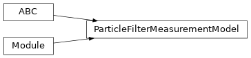
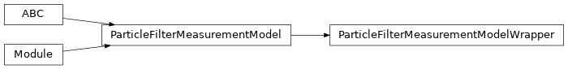

torchfilter.base._particle_filter_measurement_model
Private module; avoid importing from directly.
Module Contents
Classes
Observation model base class for a generic differentiable particle |
|
Helper class for creating a particle filter measurement model (states, |
- class torchfilter.base._particle_filter_measurement_model.ParticleFilterMeasurementModel(state_dim: int)[source]
Bases:
abc.ABC,torch.nn.ModuleObservation model base class for a generic differentiable particle filter; maps (state, observation) pairs to the log-likelihood of the observation given the state ( \(\log p(z | x)\) ).
- state_dim
Dimensionality of our state.
- Type:
int
- abstract forward(self, *, states: types.StatesTorch, observations: types.ObservationsTorch) torch.Tensor[source]
Observation model forward pass, over batch size
N. For each member of a batch, we expectMseparate states (particles) and one unique observation.- Parameters:
states (torch.Tensor) – States to pass to our observation model. Shape should be
(N, M, state_dim).observations (dict or torch.Tensor) – Measurement inputs. Should be either a dict of tensors or tensor of size
(N, ...).
- Returns:
torch.Tensor – Log-likelihoods of each state, conditioned on a corresponding observation. Shape should be
(N, M).
- class torchfilter.base._particle_filter_measurement_model.ParticleFilterMeasurementModelWrapper(kalman_filter_measurement_model: KalmanFilterMeasurementModel)[source]
Bases:
torchfilter.base.ParticleFilterMeasurementModelHelper class for creating a particle filter measurement model (states, observations -> log-likelihoods) from a Kalman filter one (states -> observations).
- Parameters:
kalman_filter_measurement_model (torchfilter.base.KalmanFilterMeasurementModel) – Kalman filter measurement model instance to wrap.
- forward(self, *, states: types.StatesTorch, observations: types.ObservationsTorch) torch.Tensor[source]
Observation model forward pass, over batch size
N. For each member of a batch, we expectMseparate states (particles) and one unique observation.- Parameters:
states (torch.Tensor) – States to pass to our observation model. Shape should be
(N, M, state_dim).observations (torch.Tensor) – Measurement inputs. Should be either a dict of tensors or tensor of size
(N, ...).
- Returns:
torch.Tensor – Log-likelihoods of each state, conditioned on a corresponding observation. Shape should be
(N, M).